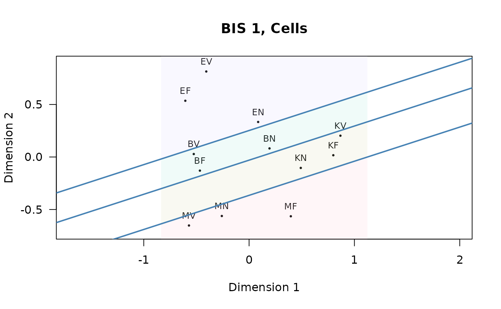

BIS Intelligence Data
BIS1.RdData are based on analyses in: Pfister, H.-R., & Beauducel, A. (1993). Data contain the correlation matrix among 12 intelligence tests, and the corresponding 2-facets assignment
Format
A list with two components: Bis1_cor is a correlation matrix, and Bis1_facets are the facet assignments. The correlations are among 12 'cells', each cell is an aggregate variable of four items according to the bimodal Berlin Model of Intelligence Structure (BIS) (Pfister & Jäger, 1992; Süß, 2015).
- Bis1_cor
A correlation matrix of 12 intelligence tests
- Bis1_facets
A data frame with 12 rows and 4 variables:
- Operation
The elements of the 'Operation' facet (B: speed, M: memory, E: creativity, K: complex cognition)
- Inhalt
The elements of the 'Content' facet (F: figural, V: verbal, N: numeric)
- BiMod
The bimodal combination of Operation and Content facet
- Speed
A reassignment to speed (B) and power (M, E, K)
References
Pfister, H.-R., & Beauducel, A. (1993). Stability of operation and content facets: A facet analysis of the Berlin model of intelligence structure BIS. Proceedings of the Fourth International Facet Theory Conference, Prague.
Pfister, H.-R., & Jäger, A. O. (1992). Topografische Analysen zum Berliner Intelligenzstrukturmodell BIS. Diagnostica, 38(2), 91-115.
Süß, H.-M. (2015). The construct validity of the Berlin Intelligence Structure Model (BIS). In: Roazzi, A., de Souza, B.C., Bilsky, W. (ed.): Facet theory. Recife: Editora UFPE (p. 123-138).
Examples
data(BIS1)
Bis1Cells <- BIS1$Bis1_cor
Bis1Facets <- BIS1$Bis1_facets
Bis1Cells_D <- smacof::sim2diss(s = Bis1Cells, method = "corr")
Bis1Cells_mds <- smacof::mds(delta = Bis1Cells_D, type = "ordinal")
Bis1Cells_mds
#>
#> Call:
#> smacof::mds(delta = Bis1Cells_D, type = "ordinal")
#>
#> Model: Symmetric SMACOF
#> Number of objects: 12
#> Stress-1 value: 0.096
#> Number of iterations: 27
#>
plot(Bis1Cells_mds, main = "BIS 1, Cells", las = 1, asp = 1)
Bis1Cells_mds_ax <- axialLines(crd = Bis1Cells_mds$conf,
group = Bis1Facets$Operation,
col = "steelblue", fill = TRUE)

Bis1Cells_mds_ax$misclass
#> [1] 0